Ueno
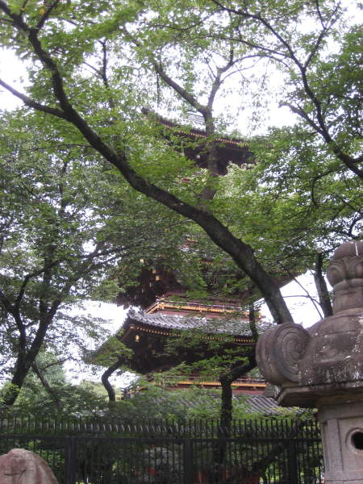
I
made a mad rush at 3:30pm or so, to get to the Ueno zoo, in Ueno park,
before it stopped admitting people at 4pm. I made a couple wrong
turns, but I figured I could barely make it in, and see the giant panda
they're supposed to have there. Well, I made it to the zoo in
time, but not the entrance. I heard the boars happily snorting
behind the fence, and saw some glimpses of flamingos. Alas, I
could not get in. Later I found out the panda died years ago
anyway, so I guess this temple was good enough.
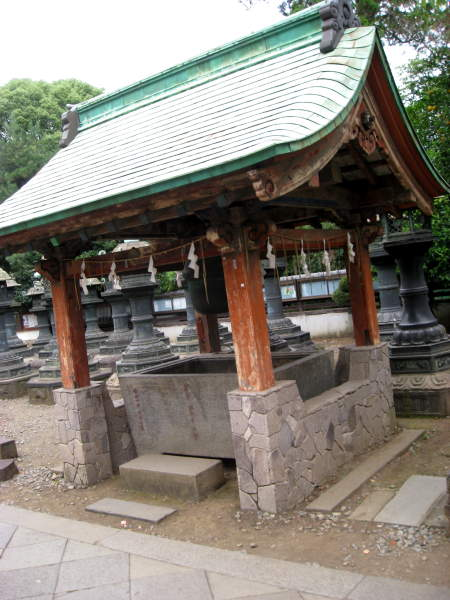
Here's a shrine surrounded by lots of stone lanterns.
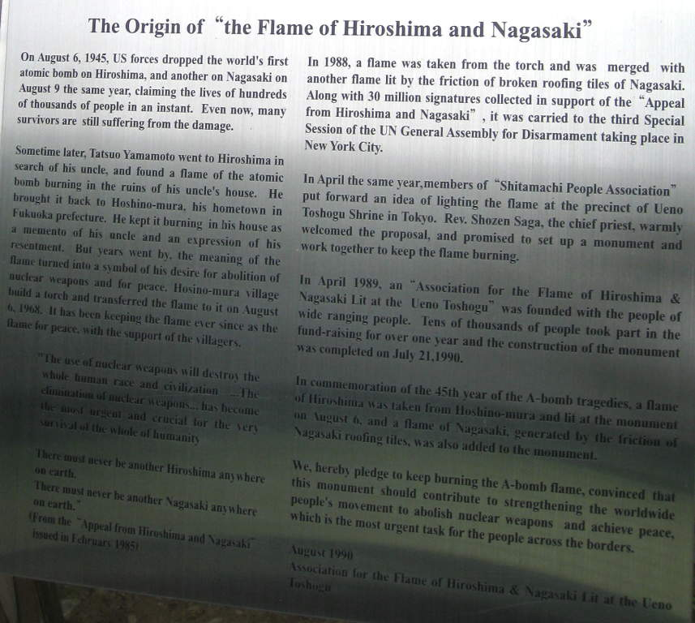
Upon
further investigation, I read this. The Japanese have their heart
in the right place. I read some literature that says America may
have forced Japan into the war, and I'm sure some believe that.
However, this plaque only talks about what's important.
A-bombs are bad, and we should remember that.
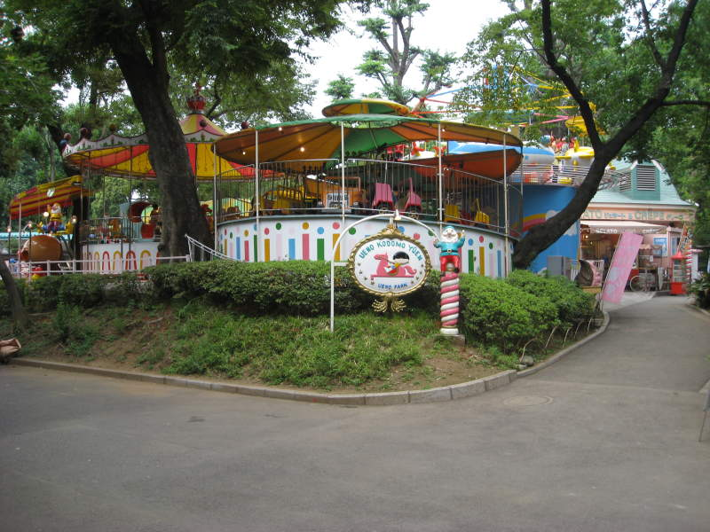
Here's a colorful little amusement park. I bought an ice cream cone here.
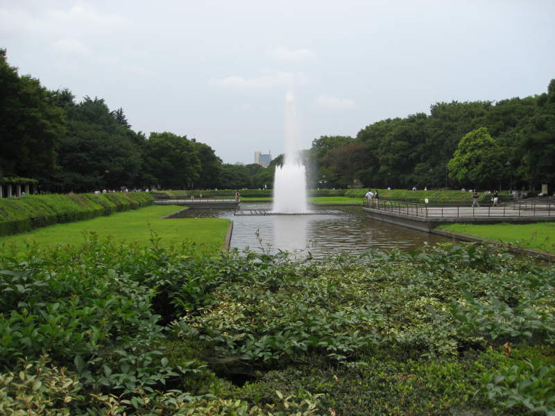
This fountain seemed more imperial than the fountains at the Imperial Palace.
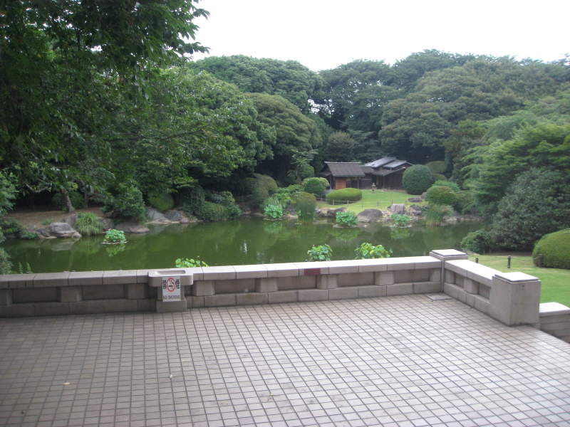
I guess I would have liked to have more time to see Ueno Park during the day. You can see it's worth exploring.
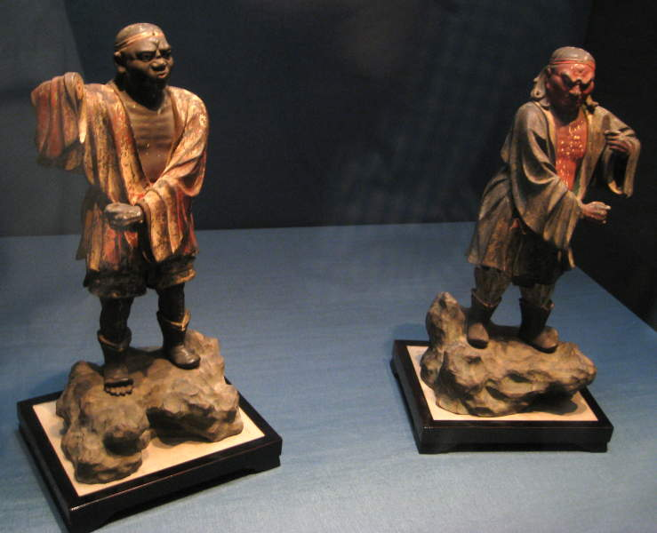
So
the transition to these guys might seem sudden, but there's an
explanation. I ended up wandering into the National Museum there,
and I was only allowed to take pictures of some of the exhibits.
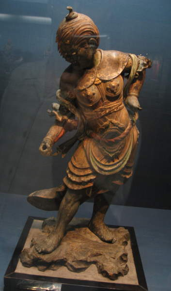
As long as there was no "Photos not allowed" signs, I was snapping pictures. Don't ask me to explain this one.
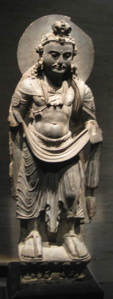
Statues gaze peacefully into oblivion, adorned with skillfully carved draped clothing.
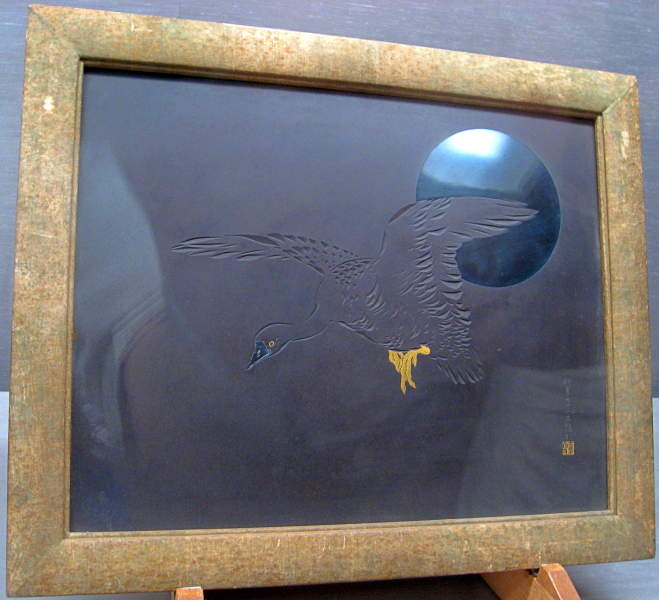
I
like the reflective moon in this one. Very good manipulation of
the medium. It looks to me like the moon is a circle of polished
stone, but maybe it was painted.
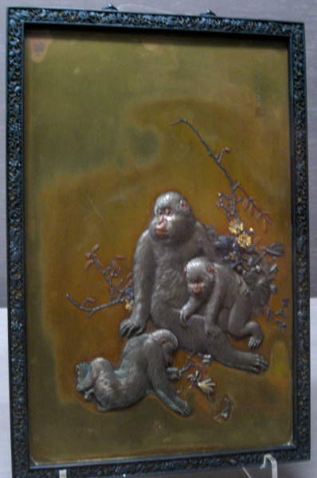
Brass monkeys.
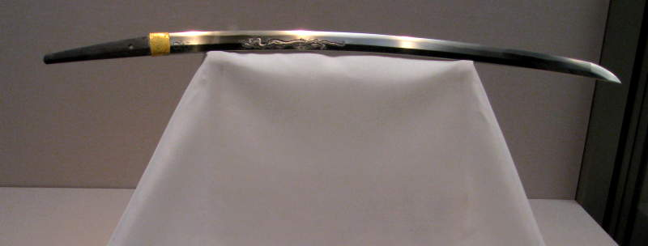
Here's
a katana. There was lots of information, mostly in Japanese,
about the history of these swords. I liked the dragon decoration along the middle of this blade.
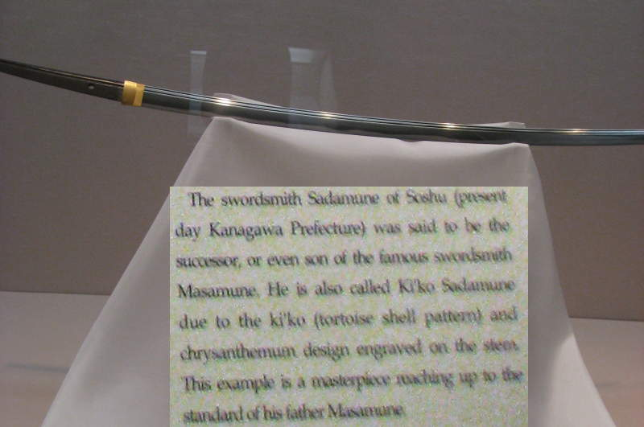
Here's some of that information, and I was allowed to take a picture. Enjoy!
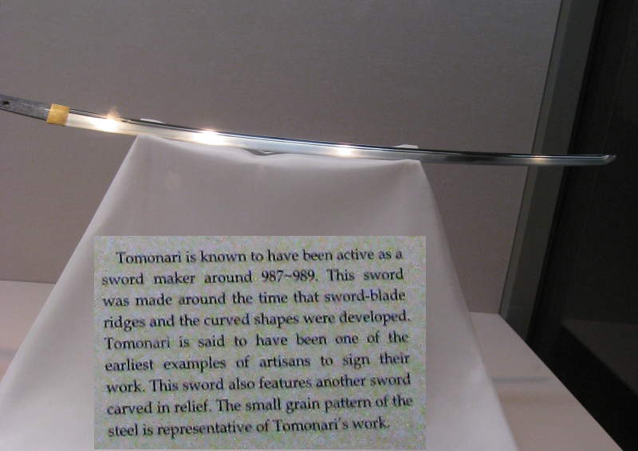
A sword that looks this good after over a thousand years. Kind of surreal.
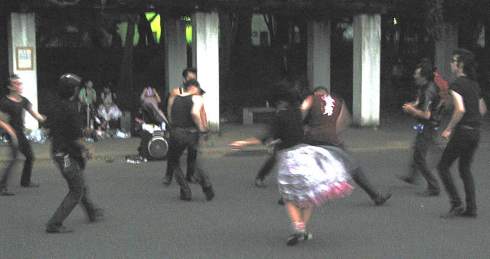
So
we left the museum and headed over to a restaurant. We walked
past these dancers, all Japanese. They were dancing to American
1950's music. It was awesome and refreshing at the same time.
I haven't seen this style of dancing since my last trip to Johnny
Rocket's.
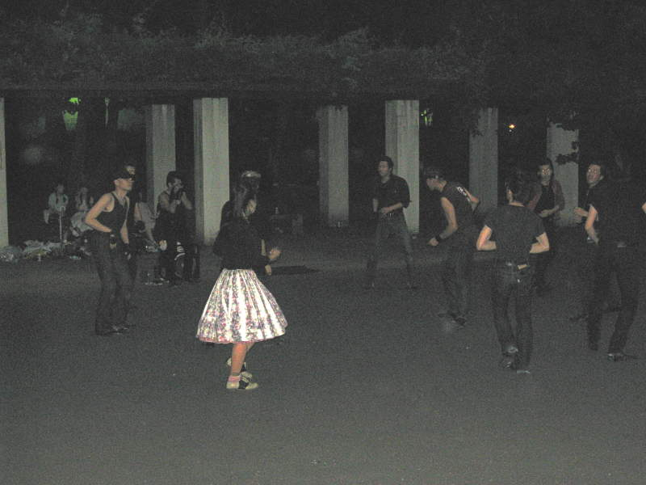
Here's a clearer photo of the dancers, after they calmed down a bit.
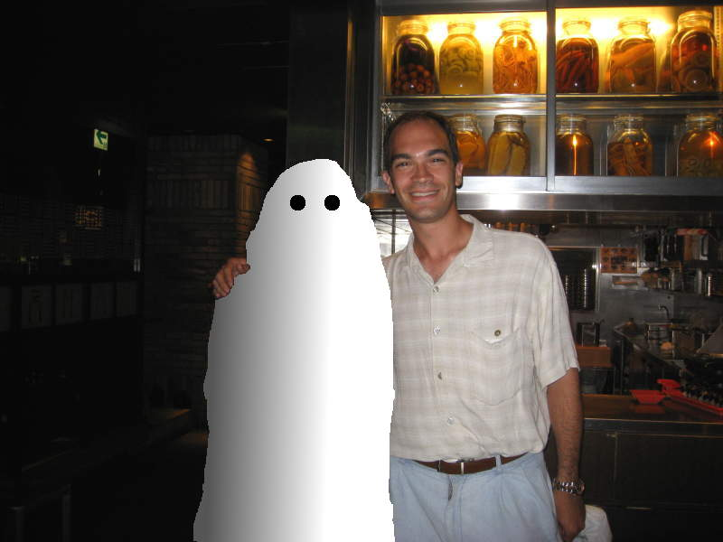
When
I said "we" on this page, I did not mean me and my friends from New
Jersey. I meant me and a woman I met in Ueno, formerly pictured here. I met her in
the museum and we decided to eat dinner together at a Korean
restaurant. I later learned that in Japanese culture, that hand
on her shoulder was a bit presumptuous. Perhaps that's why I had to adjust the picture accordingly.
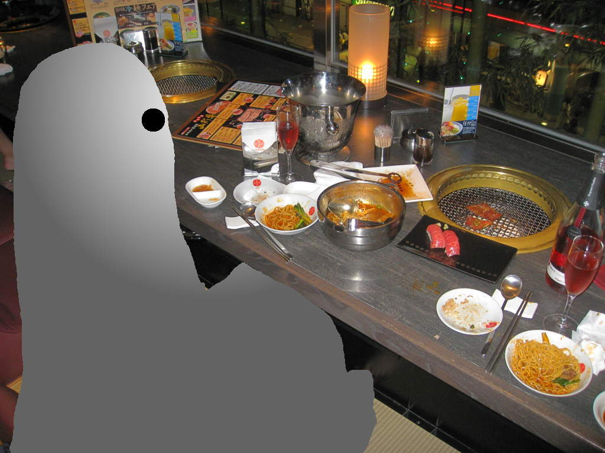
We
enjoyed a lot of tasty food that we threw on this little grill, piece
by piece, and pulled off with chopsticks. I forget what type of
wine we had, but it was good.
Back